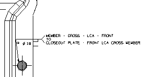

自动创建焊接注释
您可以在图纸上手动或者自动创建焊接注释。
当您在图纸上自动创建焊接注释时，要先在图纸上选择您想要注释的焊接符号，NX 将会提取用来创建这个焊接参数，并在图纸上自动创建焊接注释。
注释将与焊接特征关联，所以如果编辑了焊接特征，这些更改都会自动显示在图纸上。
当您手动创建注释，或者同时创建自动注释时，您可以将它们移动到图纸上的其它位置。

您也可以从其它焊接或者中转系统中使用电子表格文件(*.csv 格式)导入焊接位置。
|
注释
|
如果焊接特征在建模应用模块中被编辑，您可以选择更新所有焊接或者某一个焊接。
|